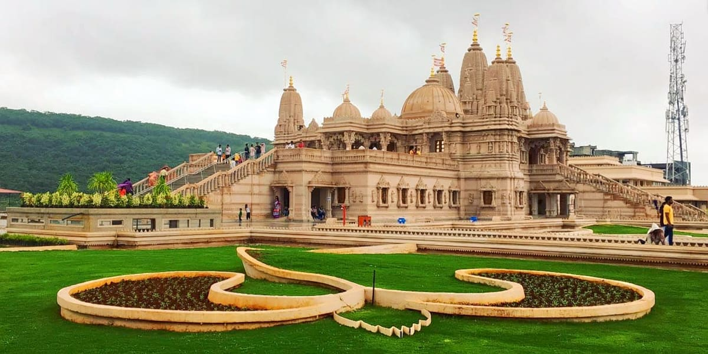
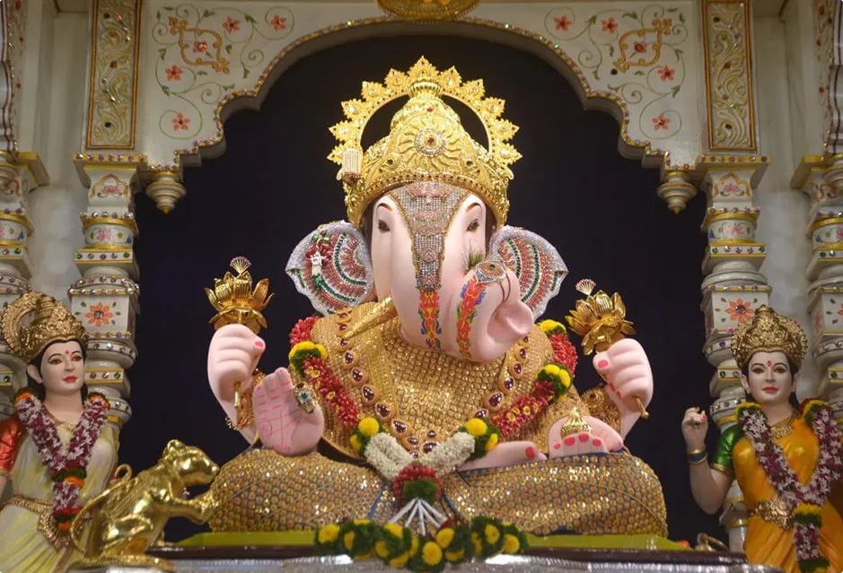

Historic & Spiritual Icons of Pune



Pune is known as the cultural capital of Maharashtra, blending tradition with modern growth. It is often called the "Oxford of the East" because of its renowned educational institutions. The city is also a hub for IT and industry, while maintaining its rich heritage, festivals, and vibrant lifestyle. Surrounded by scenic hills, Pune offers both history and natural beauty.
